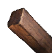
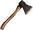

Балка секвойи
Предметы / Добыча
Открыть в интерактивной вики →
| Вес | 1 |
|---|---|
| Цена | 0 |
Описание
Требуется для выполнения задач в Беирне, а также во время выполнения квеста на Морану.
Для добычи требуется
Для добычи требуется

Топорик для секвойи.| - |
Где найти
Применение
|
Как добыть
| С помощью Топорика для секвойи рубим секвойи в Беирне. Вскоре рядом с пнём появится Бревно секвойи, и его можно будет собрать. |